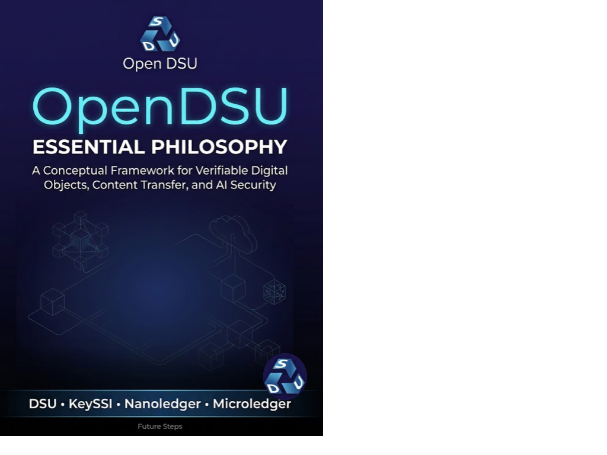

Technology · Axiologic Research Editions
OpenDSU
Essential Philosophy
The dangerous record is not the forged one. It is the perfectly plausible one that arrives with just enough missing history to make a machine act.
Trust is not a field in a database
OpenDSU begins with a change in the order of operations. Conventional information systems commonly act first and reconstruct context later: a log is inspected after a dispute, a team calls the sender, an auditor asks the vendor for the missing history. That habit becomes dangerous when autonomous systems can move from a received message to an external consequence before a person has found the surrounding evidence. A valid signature alone, the book argues, can still accompany a superseded patient record, a revoked authorization, a withdrawn model or an event inserted into the wrong branch of history.
The proposal is not a demand that everything be public, nor a familiar plea to put every datum on a blockchain. It is a philosophy of bounded verifiable objects. A Data Sharing Unit holds protected content in encrypted bricks; a BrickMap makes the object reconstructable; an anchor records successive commitments as a small, purpose-specific ledger. KeySSIs and capability-based authority identify who may perform which act, while wallets, security contexts and BDNS make it possible to work across plural trust domains. The vocabulary is technical because the claim is architectural: confidentiality, continuity and accountability should be designed into the object rather than improvised around a database export.
The book’s strongest image is the verification gap. A hospital agent, for example, might receive a recommendation that is syntactically sound and signed by a legitimate service. The pharmacy still needs to know whether the record is current, whether the authority was revoked seconds earlier, what model and configuration produced it, and whether policy requires an independent witness. OpenDSU calls for evidence to travel with consequential transitions: a signed event connected to the accepted prior state, coupled to the responsible authority, applicable policy and provenance needed by the domain. This is “notarization by default,” calibrated to risk rather than indiscriminate publication.
At the point where a record becomes a consequence
What is wrong with an ordinary audit log? It may be mutable, inaccessible outside its original service, or meaningful only to the system that wrote it. The book distinguishes a technical trace from portable evidence of a semantic act. Its answer is a history that an independent participant can replay or validate, even if the original vendor or operator disappears.
How can secrecy coexist with verification? By separating commitments and witnesses from the protected payload. The relevant parties reconstruct what they are authorized to see, while the wider system can verify continuity, authorization epochs, policy and receipts at the required assurance level. A local note, a cross-institution clinical result and a public-safety directive need different witnesses; they need not share all their contents.
What does this change for AI agents? It makes “before consequence” a real control point. An agent should resolve the object, establish its accepted branch, check capability scope and revocation, evaluate provenance and only then perform a side effect. The result is not perfect certainty—the book is explicit about faulty sensors, collusion and defective validators—but a narrower, testable promise: valid-looking content should not become operational just because its context is difficult to obtain quickly.
The object worth trusting is one whose evidence survives the system that first stored it.
The architecture behind a future memory
This is a careful bridge between data architecture, cryptographic authority and governance. It gives readers a way to discuss provenance without reducing it to metadata, sovereignty without turning it into isolation, and verification without treating it as a marketing word. Later chapters carry the argument into temporal and ordering attacks in agentic systems, proof-carrying transfer, LightDSU and a research programme for verifiable AI. The limits and adoption criteria matter as much as the mechanisms: assurance should be proportionate, policy remains domain-specific, and a technical framework cannot redeem corrupt institutions.
For builders of cross-organisational systems, regulated workflows, agent platforms and durable public infrastructure, OpenDSU offers a sharper question than “is this data secure?” Can a future participant reconstruct the object, its authority and its history well enough to decide whether it deserves reliance? That question stays alive long after the particular stack has changed.